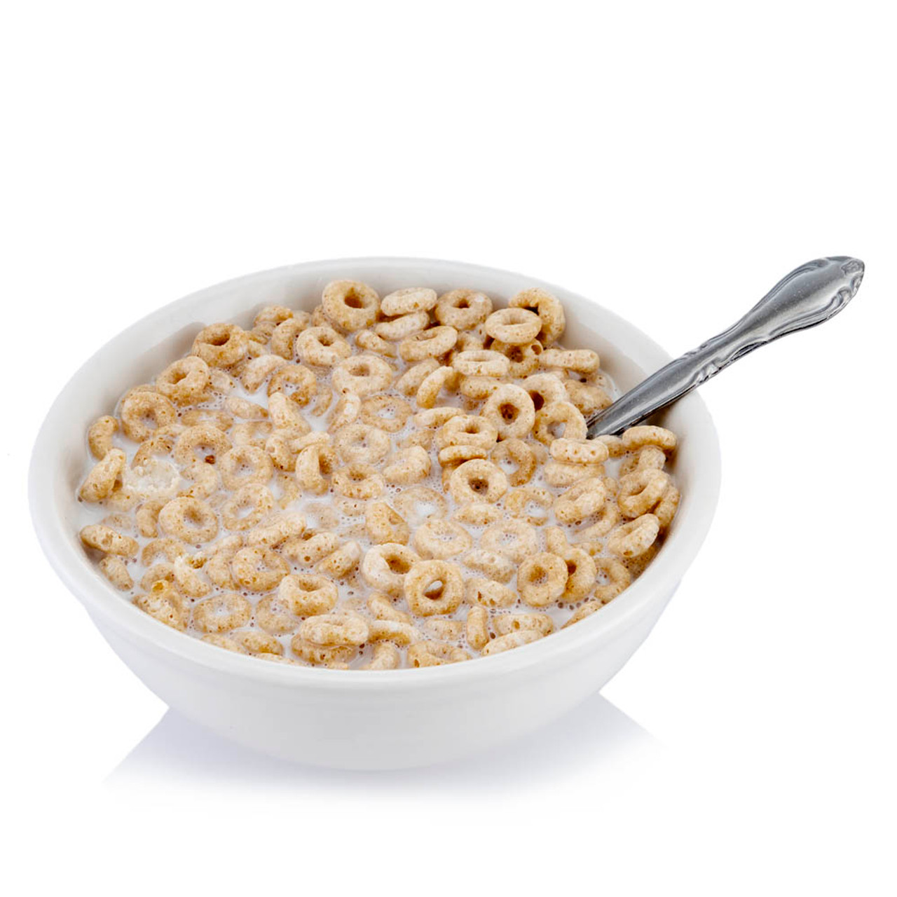

How to Make Cereal

Description
Cereal, in a bowl with milk that was recently poured
Ingredients
- Cereal of choice - Cherios
- Milk of choice - Whole Milk
- Container of choice - 5 gal bucket
Cooking Steps
- Pour desired amount of Cereal
- Check fill level of vessel that is Cereal
- Pour Milk till 1.5 inches below Cereal Line
- Optionally add desired fruit topping - Strawberries
- Eat quickly before it gets too soggy
Home